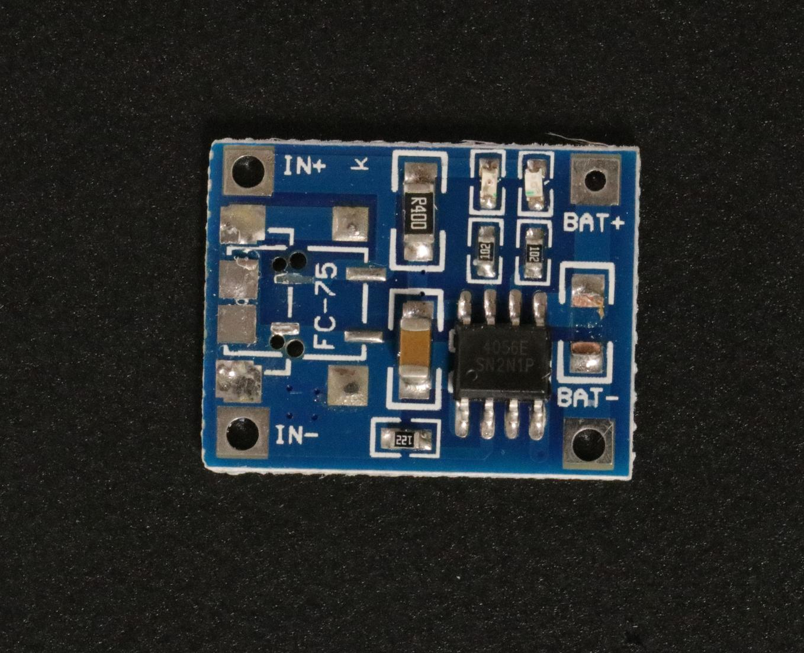
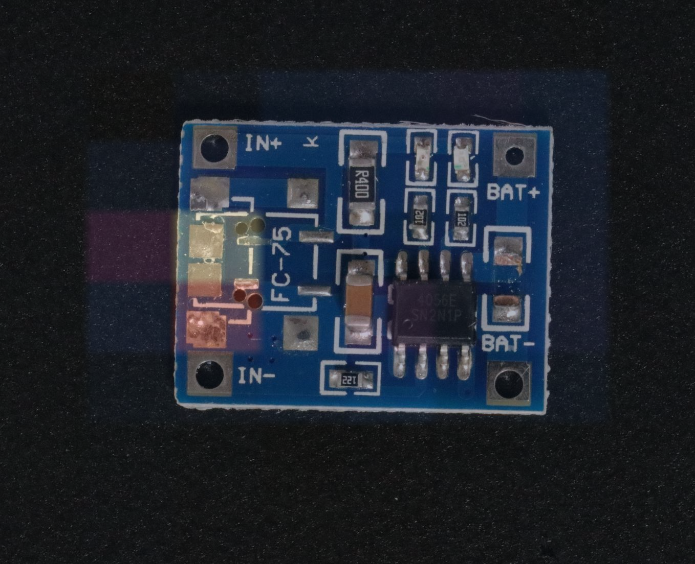
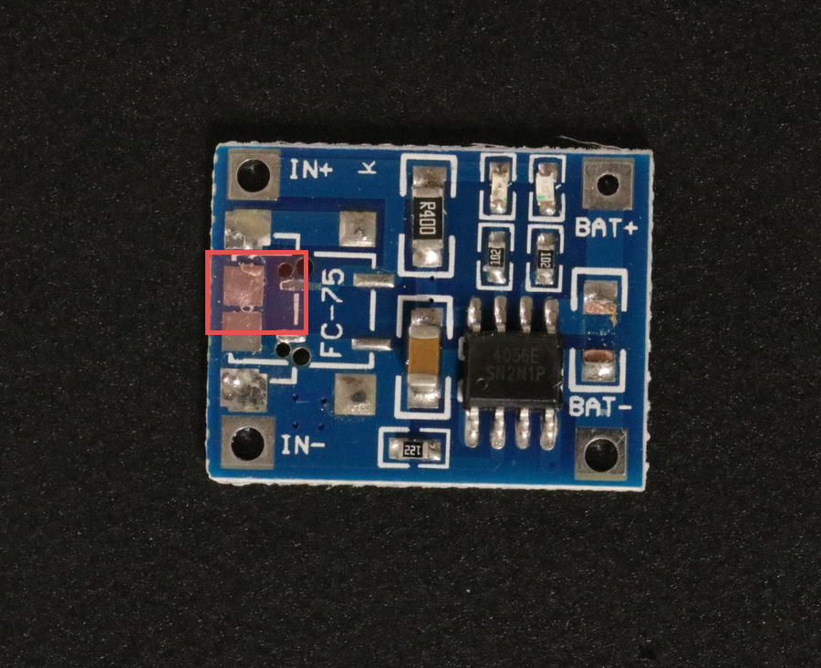

Kalibra inspects — and decides whether its own inspection can be trusted.
An offline, reproducible visual-inspection runtime for industrial quality control. Every result on this page is backed by a governed, inspectable artifact — and everything not yet demonstrated is labeled as such.
The runtime reaches a defect judgement and locates it. It does not decide whether that judgement can be trusted — the raw anomaly measure and calibrated confidence are never blurred.



Judgement only — “is this defective, and where?”
A standalone measure of how unusual the input is — not a probability of being correct, and not calibrated confidence.
▸ Walk the decision · governed identity
This is where the raw measure would become calibrated confidence and an accept / review / reject / abstain outcome. Kalibra has not built or evidenced that layer, so no gauge is shown here. The absence is the honest state — not an error.
Evidence here means provenance and reproducibility, not scores. Every link is a claim in one sentence, a proof handle, and an invitation to re-check it against the repository yourself.
A serious runtime engineering result: across 6,492 samples the runtime's outputs match the offline-validated signal at the floor of float64 precision — far below the verification tolerance.
The maximum deviation sits over 140× below the 1e-12 tolerance — at the noise floor of double-precision arithmetic. In plain terms: the runtime carries exactly the validated offline signal.
Same input, two independent runs. Every governed comparison in runtime_replay.json is identical.
A decision is a chain, not a verdict. This flow is complete from Inspection → Evidence → Evaluation, and deliberately unbuilt at Trust → Review. The gap is the honest story, drawn to scale.
Not a gauge. A plain statement of what is demonstrated, what is not, and how a skeptic can verify every claim without reading the code.
- A real learned PaDiM signal carried end to end by the runtime.
- Runtime equivalence to machine precision across 6,492 samples.
- Byte-identical deterministic replay across all seven comparisons.
- A hash-anchored evidence chain from dataset archive to runtime.
- No calibrated confidence — the raw measure is not a probability of being correct.
- No accept / review / reject routing and no abstention.
- No drift assessment and no interactive human-review loop.
- Single seed, VisA-proxy domain — not a production or domain-of-record claim.
- Copy any SHA-256 on this page and re-check it against the repository.
- Regenerate the equivalence and replay records from fixed inputs.
- Read the governed evidence documents linked at Station 08.
- Every absence above is stated — nothing is hidden in a footnote.
Governed C-6 metrics, each carrying its qualifier inline. The weak numbers are shown, not hidden — evidence that the author reads their own results honestly.
A clearly drawn limit is a sign of understanding, not a gap. The trust-qualification layer is the thesis of the whole system — and Kalibra says, in the same calm voice it uses for its proofs, that it is not yet demonstrated.
Process is only interesting once the output is believed. The phase lineage turns the repository's own governance discipline into an inspectable artifact.
P1
Engineering substrateGoverned foundation, five-domain architecture, reproducible offline boundary.
▸
P2
Offline scienceGoverned VisA acquisition, PaDiM baseline, C-6 scientific evaluation.
▸
P3
Runtime integrationONNX export, export- & runtime-equivalence, replay, placeholder retirement.
▸
The page earns the click to the repository by first proving the work is worth reading. Every claim regenerates from a fixed starting point.
Works from a normal public clone using tracked repository contents only.
python3 -m pytest -q python3 scripts/verify_public_clone.py python3 scripts/build_portfolio_evidence_bundle.py --check
Requires separately acquired governed VisA data and is expected to fail closed when that data is absent.
python3 scripts/verify_padim_runtime_equivalence.py verify python3 scripts/verify_placeholder_retirement.py verify python3 -m pytest -q -m governed_data
Level 3 · Full scientific reproduction is a separate workflow after governed acquisition; follow the repository methodology.